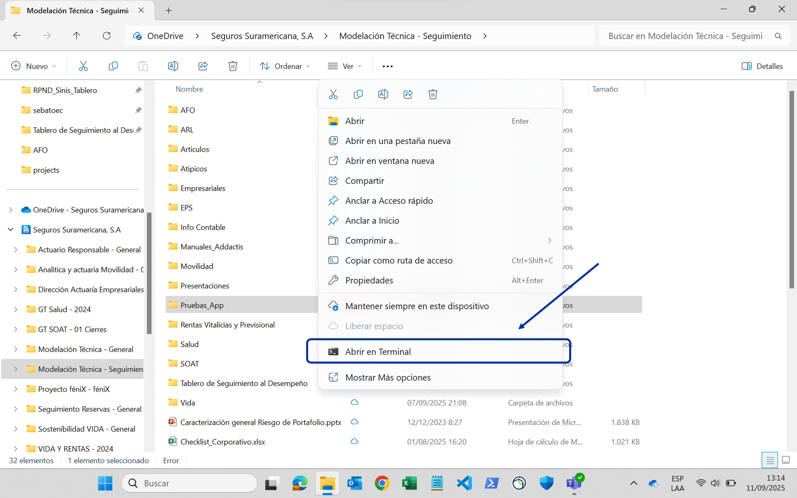

Introducción
Esta aplicación permite realizar análisis de siniestralidad última mediante metodologías de triángulos y entremés.
Funcionalidades
- Extraer información de siniestros, primas, y expuestos desde Teradata.
- Cargar manualmente información de siniestros, primas, y expuestos.
- Cuadrar contablemente siniestros y primas.
- Generar automáticamente controles y reportes SOX.
- Estimar la frecuencia, severidad, y siniestralidad por metodologías de triángulos o entremés desde plantillas de Excel.
- Almacenar y garantizar la trazabilidad de criterios y justificaciones del análisis.
- Consolidar resultados y generar informes.
Requisitos
- Git: para descargar y actualizar la aplicación.
- uv: para la gestión de librerías.
- Microsoft Excel: para crear las plantillas y realizar los análisis.
- Acceso a Teradata: necesario si se desea extraer información directamente de esta fuente.
Tip
Git y uv no requieren permisos de administrador para ser instalados.
Descargar la app
-
Elija una carpeta de trabajo donde quiera guardar los análisis. Haga clic derecho sobre ella y seleccione Abrir en Terminal:

-
En la terminal, copie y ejecute el siguiente comando:
Se descargará una nueva carpeta llamada
app-analisis-siniestralidad, que es la carpeta de la aplicación. -
Cierre la terminal.
¡Eso es todo! Consulte ahora la guía de configuración de análisis y la guía de uso de la app.